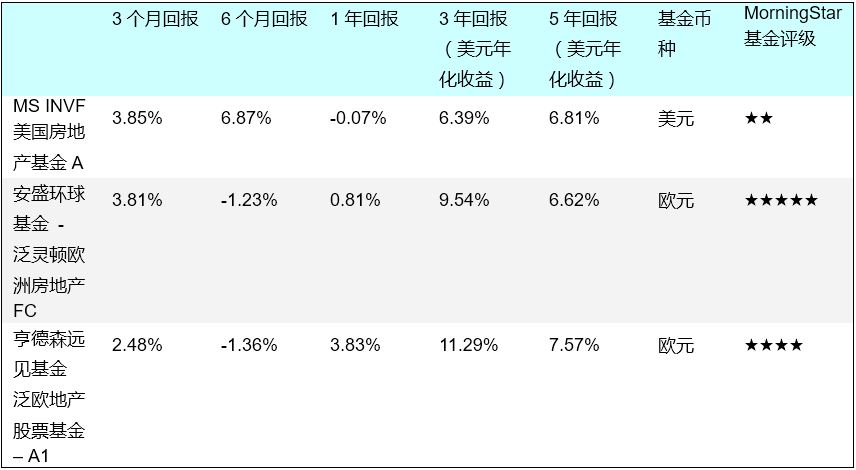

序言：
全球化的投资与全球化的资产配置并不是一句空话！许多具有全球化投资思维的投资者在面对全球极其多样化的资产类别与投资品种后感到茫然。全球用以投资的金融工具到底有多少？曾经有人打过一个比方：你走到华尔街，如果问一个投资银行家同样的问题，他会拿起一个灯泡扔到地上，然后用脚碾碎，告诉你，数一数地上的碎片你就知道答案了！
“赚洋钱”团队感知到这样的困惑，并且深知即便你对所投资的产品有所了解，但瞬息即变的金融与经济环境也会直接影响着你的投资结果。目前的全球金融与经济的大环境正是处于这种变化之中。为此，我们每季度专栏推出“全球基金投资季刊”以帮助投资者了解全球经济变化的脉搏以及各类资产的投资回报，并且“赚洋钱”团队通过对经济前景的判断与各行业及资产类别的分析精选而出的基金类别供投资者参考。
投资是门艺术，但需要严谨的分析判断与专业知识。考虑到投资者自身的金融专业能力的差异，尽管我们的季刊以求全面完整，但我们还是会兼顾投资者不同的能力在内容与形式上加以区分。因此，我们会把重点部分，或者是投资者关注最深的部分置于文章内容之前。
我们所有给出的观点是通过分析大量的金融与经济数据以及专业研究报告后得出，仅代表“赚洋钱”团队自身的观点并仅供投资者参考！
全球投资基金精选：
2016年第1季度悄然已失，第2季度哪些基金资产值得你关注？-"赚洋钱”团队通过对覆盖全球投资的5000多个基金的分析并结合当前经济基本面为你精选而出以下基金资产：
行业类基金 - 贵金属股票：
推选理由：尽管大宗商品的整体表现不佳，并有可能这样的表现会持续，但我们认为，贵金属应该区别对待。贵金属作为资产配置的一部分具有持有价值，尤其是当全球经济前景并不明朗，市场避险情绪仍然存在之时，贵金属作为投资的价值凸显。但是，由于近期3个月贵金属涨势凶猛，这样的涨势是否会进一步持续，并且全球投资者的避险情绪容易随着市场的变化而变化，美元在加息预期下的强势并没有得以改变，我们对投资贵金属基金抱有一定的谨慎，不建议追高，建议逢低配置。长期看，贵金属的上升趋势仍然完整。
行业类基金 － 健康护理：
推选理由：健康护理行业目前处于非常低的估值 － 股票价格与合理估值比为0.85。近一年来行业股票的大跌提供了良好的机会。我们选择的基金均比较大比例配置于美国市场，这不难理解，医药科技的领先低位仍然为发达国家所掌握，尤其是美国。但是，健康护理行业目前仍然存在一些不确定性，尤其是美国大选中可能发起的医疗制度改革，对药价的限制，会影响到企业的盈利大约5%左右，尽管这样的影响容易被相关企业消化，而且市场已经在股价中体现了这一不利因素，但整个经济环境还是有可能造成投资者的过度敏感。
行业类基金 － 金融服务：
推选理由：健康护理行业目前处于非常低的估值 － 股票价格与合理估值比为0.85。近一年来行业股票的大跌提供了良好的机会。我们选择的基金均比较大比例配置于美国市场，这不难理解，医药科技的领先低位仍然为发达国家所掌握，尤其是美国。但是，健康护理行业目前仍然存在一些不确定性，尤其是美国大选中可能发起的医疗制度改革，对药价的限制，会影响到企业的盈利大约5%左右，尽管这样的影响容易被相关企业消化，而且市场已经在股价中体现了这一不利因素，但整个经济环境还是有可能造成投资者的过度敏感。
行业类基金 － 科技：
推选理由：目前全球的经济继续向低能耗高科技方向转变，而引领科技发展方向以及动力的地区仍在发达国家，美国当为首推。无论是云计算、智能科技、大数据分析还是生物科技领域，美国都处于科技领袖地位。过往的1年，科技公司的兼并案数量及金额都在上升，这表明，行业的活力强劲。我们推选的基金70%以上配置于美国市场，并具有过往历史业绩的稳定性。但是，风险在于科技行业需要投入巨大的研发成本，全球经济的不确定性以及企业盈利能力可能会对此加以制约，因而降低这一行业的估值表现。
行业类基金 － 房地产：
推选理由：目前全球性的低利率环境有利于房地产行业的发展，尤其有利于欧洲房地产市场。从我们选择的基金来看，欧洲房地产基金的平均市盈率在14-17倍之间，具有相对的安全边际。美国的经济衰退的迹象越来越不明显，房地产行业无论从新屋开工、二手房销售还是租金上涨方面都指向一个比较健康的房地产产业。但是，可能存在的风险是：欧洲方面，欧元区尽管处于降息与量化宽松环境，但工资收入增长并不明显，消费及信贷信心有待进一步回升；美国方面，从我们选择的基金来看，平均市盈率在40左右的水平，相对处于比较高的水平，但只要美国房地产企业的盈利能力仍处于强劲的增长，估值水平将会大幅下降。然而，最主要的威胁来自于美联储的加息，但只要加息符合低频小幅的预期，人工收入持续稳定增长，房地产市场受到加息的影响有限。
行业类基金 － 能源：
推选理由：能源价格的下跌有所减缓，我们并不能预见能源价格是否已经筑底，但是从能源的供需上来看，经过几年的下跌，能源企业的兼并与关闭已现，产业面临整合，并且OPEC等石油组织对石油供给的控制从而传导到对价格的控制是具备能力的。同时，随着美国经济的复苏，石油需求有可能不断上升。作为全球经济的晴雨表，只要全球经济出现转机，油价也应该具有机会。因此，我们认为长期投资者应该配置部分能源资产。从上述推选的基金看，MFS全盛基金以稳定的表现获得MorningStar给出的5星最高评级，其超越其它同类基金表现的原因在于其配置中配置能源的资产仅达76%，而其它部分配置在公用事业上，因此，能源的下跌给它带来的影响也相对变小。相反天利全球能源股票基金94%的资产配置于能源行业，因此，如果油价有较大幅度的反弹，天利基金会有良好的表现。但是，需要注意的风险是：全球经济继续下行以及石油输出国组织及其它产油国在冻结石油产能上出现分歧。我们预计，油价会继续波动，只有逢低才是良好的投资机会。
区域类投资基金 － 欧洲：
推选理由：持续的低利率以及量化宽松政策是我们看好欧洲以及欧元区的理由。政策鼓励银行低成本地向企业、商业与个人信贷降低了企业的融资成本，这尤其有利于中小企业的发展。我们认为：适度地配置这一地区的股票基金不仅有利于风险的分散，更有利于获取可能的超额回报。
债券投资基金 － 欧元区：
推选理由：尽管欧元区进一步降息的空间不大，但降息的可能性还是存在。同时，更为重要的是，欧洲央行的资产购买计划尤其有利于企业债市场。从上述精选债券基金来看，投资标的主要覆盖欧元区，包括企业债与政府债。近期收益回报比较高的往往是投资比重倾向于BBB评级或政府债的基金，收益明显高于投资级别的债券基金。高风险债尽管在过去的3个月表现出众，但考虑到高风险债的基差已经收窄，预计未来还会有进一步扩大的趋势并往复震荡，我们刻意回避高收益债基金。对于投资者而言，今年欧债，特别是欧元区债券的机会比较凸显。投资者可以考虑介入。
债券投资基金 － 通胀挂钩：
推选理由：全球经济目前具有很大的不确定性，一方面从欧洲日本来看，低通胀甚至通缩尚在进行中，而大洋另一边的美国，随着经济的好转，通胀开始显现。新兴市场国家通胀与通缩并行。大宗商品与原油价格的持续低落是导致全球通胀维持在低位的一大原因。伴随着原油价格的反弹、美国通胀苗头的显现以及投资者担忧在各国央行与政府货币与财政刺激计划下可能逆转的低通胀，避险情绪引导资金流入通胀挂钩资产。1季度欧洲通胀挂钩债券的上扬正是这种担忧的结果，尽管欧洲地区通胀水平普遍低下。在这里，“赚洋钱”团队精选一部分与通胀挂钩的债券基金。对于后期，我们看好美国的通胀挂钩资产，其次是全球通胀挂钩资产，尽管欧洲通胀挂钩资产也会受益，但欧洲普遍的低通胀水平可能会持续一段时间。
“赚洋钱”投资场景
对于大多数投资来说，过往的10年的全球化资产配置之路并不一帆风顺！除了少数行业与资产类型外，大多数的资产未能战胜无风险收益的美国国债收益。
我们从MorningStar代表不同资产类型的将近200个基金分类的数据中进一步整理得到以下全球各资产类别基金过往10年的平均年化收益表：

为了让你进一步地感性认识到这十年你的资产变化，我们做出以下假设：
假设你是一个理性的投资者，在不同风险水平上都做出理性的投资决策
在标准框架下按风险配置资产，并在国家、地区、行业进行如下配置：
- 激进型资产配置 80%高风险资产、15%中等风险资产、5%低风险资产
- 均衡型资产配置 50%高风险资产、25%中等风险资产、25%低风险资产
- 保守型资产配置 50%高风险资产、25%中等风险资产、25%低风险资产
与持有无风险的美国10期国债收益相比，你的投资结果是这样的：
结论：
过往的10年，只有防守型与科技行业全面跑赢无风险收益的美国国债，而商品能源与贵金属表现最差
从区域上看，只有配置美国股票的基金能接近并战胜无风险收益资产，新兴市场国家的股票基金表现最弱
商品能源及贵金属的表现拖累了新兴市场，并由此影响了整个投资回报
不管是哪类资产配置的投资，均未达到风险补偿后的回报
在配置灵活性最高的股票基金类别中，仍有25%的基金类别10年期投资超过同期10美国国债(平均年化回报6.32%)、28%的基金类别5年期投资超过同期10美国国债(平均年化回报5.99%)、46%的基金类别3年期投资超过同期10美国国债(平均年化回报5.24%)。资产发掘在投资的任何一个周期都是极为重要的
全球基金投资回顾
那么，过往这10年全球金融市场究竟发生了什么？未来的一个季度我们应该关注什么？
内容摘要：
全球基金投资回顾：
过往的10年经历了经济的2轮交替，投资的不确定性不断增加，从而影响了投资收益。尤其是近5年来，全球股票基金投资回报的均值均处于负收益
尽管经历了年初的黑色1月，但之后的全球股市在贵金属、大宗商品与能源价格反弹的带动下表现出色。1季度，贵金属、大宗商品、新兴市场与能源股票基金涨幅居前，录得几年来第一次出现的正收益，分别为：45.94%、16.72%、5.81%与5.71%
尽管经历了年初的黑色1月，但之后的全球股市在贵金属、大宗商品与能源价格反弹的带动下表现出色。1季度，贵金属、大宗商品、新兴市场与能源股票基金涨幅居前，录得几年来第一次出现的正收益，分别为：45.94%、16.72%、5.81%与5.71%
从MorningStar的四个房地产分类基金(非直接投资于房地产REITS的房地产股票基金)的平均回报(美元)来看，过往的十年总体表现相对平稳。10年、5年、3年累计回报(美元)分别达到：25.56%、23.52%以及8.22%，今年1季度涨幅达3.24%
2016第2季度全球基金投资展望：
全球性的货币宽松仍会持续，尽管美联储可能会出现符合预期的加息，但可能会在6月
发达国家的经济基本面可能会得以持续改善，但速度缓慢，并且仍然存在不确定性。新兴市场体经济会继续让人担忧，货币贬值潮是否会再次重现，值得关注
2季度市场不会沿着1季度市场的亮点(贵金属、大宗商品、新兴市场与能源)顺利前行，市场大幅波动在所难免
市场机会上，关注贵金属与能源相关的股票基金。波动中逢低配置，波动上行的趋势不改。继续关注并看好欧元区债券、通胀挂钩债券以及欧美房地产相关的股票基金
区域上，关注欧洲与日本。在持续量化宽松的背景下，欧洲与日本股市存在机会(风险在于欧洲难民问题、英国脱离欧盟公决、欧洲地区高发的恐怖主义袭击以及日圆大幅升值)
过往的10年，全球经济经历了2轮周期的交替 － 08年前至08年金融危机之后两年的经济顶峰滑向经济低谷以及之后的经济复苏至始于2014年的经济衰退。衰退周期似乎仍在进行。期间，全球经历了08年的金融危机、俄罗斯经济危机、欧洲债务危机以及大众商品与原油价格持续的暴跌。市场避险情绪的波动在这10年间完整地体现在美元指数与黄金价格的变动中。
美元指数在08年金融危机(源于美国的次贷危机)爆发后，在市场丧失对美元的信心之后一度于08年3月跌至71.67的10年最低水平，之后在美联储力挽狂澜的量化宽松政策刺激下，投资者对美元逐步重拾信心，但美元指数始终处于90 – 70的范围内波动。15年初，随着中国经济增长的全面放缓，能源与大宗商品的价格进一步下滑，市场对全球经济的担忧推动美元指数最终突破90并于15年3月达到近10年来的最高水平100.18。
数据来源：华尔街日报
与美元指数的波澜不惊相比，黄金价格在这10年的大幅波动更能反应市场避险情绪的跌宕起伏。08年金融危机之后，市场避险情绪逐渐升温，黄金价格从08年10月的732美元一盎司一路马不停蹄地攀升至11年7月的1837美元一盎司，之后，黄金价格跟随着能源价格一路走低至15年12月的1062美元一盎司。
数据来源：Bloomberg
在这样一个避险情绪大幅波动，而且避险情绪决定资金流向的市场，几乎很难找到一类能提供持续回报的资产也就不足为怪了。
基金资金流向
自2015年11月以来，全球各资产类别基金的资金一直处于每月的净流出。今年2月份的资金净流出却为自去年4月份以来净流出的最小月份。尽管最近3个月的资金净流出达到了3342.8亿美元，但2月份包含大宗商品、能源与贵金属的直接投资基金以及房地产基金均出现了近12个月来的最大净流入，而且商品类实现了整个第1季度的资金净流入。显然，大众商品、能源以及贵金属直接投资资金的净流入也推动了与此相关的股票基金资金的净流入。尽管从这些简单的数据中尚不能明确市场的风险偏好是否会继续上升，但第1季度大宗商品、能源、贵金属以及房地产的涨幅已经证明了资金推动的力量 － 在因风险偏好变得谨慎的市场中，流动性稀缺使得少量资金能快速推高局部资产的收益，然后离场，从而加剧市场波动。
近3个月全球各资产类别基金资金流向(单位：10亿美元)资料来源：Lipper，截止于2016年3月28日
从1月份资金流入排名前10位的拉美地区墨西哥、智利以及巴西来看，总计净流入资金27.42亿美元，但到了2月份净流出达39.73亿美元。2月份资金净流入最大的国家是美国，达到520.93亿美元，显然市场投资偏好仍然与避险情绪相关。今年前2个月净流入资金排名前2位的分别是亚洲国家韩国与泰国，分别为234.25亿美元与65.50亿美元。
进入3月份后，更多的资产类别出现了资金的净流入，但与此同时，货币市场基金出现的自去年5月以来的最大资金净流出说明了市场风险偏好在提升，同时也与货币市场基金比较低的收益相关。相反，债券市场出现了比较大的净流入，这与美联储维持现行利率不变以及欧洲央行降息的双效应叠加有关。
股票基金
根据MorningStar几乎囊括全球所有地区与行业的86个股票基金分类来看，过往10年折算成美元的平均累计回报为23.83%，5年平均累计回报为-0.40%，3年平均累计回报为-1.85%。将近持续5年的负回报也只是从2016年至今才录得0.18%的正回报。
在已经过去的2016年第一季度，全球股票市场在年初迎来了黑色的1月。受投资者对全球以及中国经济的担忧，更是由于对德银爆发债务危机从而引发欧洲债务危机的担心，恐慌情绪引导了全球市场的猛烈下跌。在全球主要国家央行强力出手援助市场的推动下，全球股市才奋力反弹。
年初出现如此剧烈的波动在历史上也堪为罕见。尽管如此，股票基金总体都迎来了开门红 － 今年迄今实现了平均正收益。也正因为如此，各类别的基金出现了迥异的表现。
股市巨大的波动推升了全球投资者的避险情绪，贵金属的受益自然首当其冲。此后，随着市场风险偏好的回归，大宗商品与能源价格走高，同时也拉动了与之密切相关的新兴市场股票。同期，Comex黄金6月期货电子交易盘价格上涨13.05%、Reuters/Jefferies CRB大宗商品股票指数上涨6.79%、MSCI新兴市场指数上涨7.51%、布伦特原油价格微微下挫-1.97%。值得注意的是：尽管贵金属、大众商品与能源的价格比较大幅度地上涨，但与此相关的股票基金的涨幅更为惊人！这主要得益于与此类资产相关的上市公司股价在过往几年的价值低估并迎合此类资产价格反弹的价值爆发。
2016年第1季度新兴市场体股票的表现令人瞩目，除中国股市外，其它新兴市场国家的股市在全球涨幅居于前列，相应的股票基金的收益也位于前列。
尽管如此，在年初至今的收益排列中，行业类股票基金中的生物科技与健康护理以及中国股票基金收益在整个89类股票基金分类中位列倒数前三位，分别为：-23.49%、-9.87%以及-13.04%。日本、英国以及欧元区股票也排名靠后。
以下列出一些行业及地区股票基金的收益状况：
我们关注房地产股基金 － 作为周期性行业的房地产在过往的10年中显然与其它周期性行业，如：大宗商品，有明显的不同。从MorningStar的四个房地产分类基金(非直接投资于房地产REITS的房地产股票基金)的平均回报(美元)来看，过往的十年总体表现超过股票基金的均值。10年、5年、3年累计回报(美元)分别达到：25.56%、23.52%以及8.22%
全球分类房地产股票基金近10年平均表现(美元收益率)：进入08年金融危机，09年房地产市场到达了大萧条以来的最坏时点。之后，美联储长期实行的量化宽松以及零利率政策促使房地产市场企稳反弹，但是与房地产资产投资的风险溢价相比，这10年这一类资产的收益仍然低于其应有的风险回报。
值得指出的是：无论从长期表现还是从当季表现来看，美国房地产股票基金的表现要远胜于欧洲以及其它地区。美国房地产市场的复苏显而易见，受到长期低利率的刺激、消费信心的回升、15年下半年以来就业数据的良好以及劳工工资的上升，无论房屋销售还是新房开工数据都指向了一个逐步康复的房地产市场。与此相反，欧洲房地产市场还未从欧洲经济不景气的阴影中走出，尽管接近于负值的利率水平意在促进消费与企业融资，但消费者信心的恢复还有待时日。亚洲房地产市场过往的不俗表现得益于中国房地产市场这几年的强劲上升。
债券基金
年初的债券市场掀起了巨大的波动。随着投资者对全球经济的担忧以及股票市场的大幅下挫，伴随着原油价格一度跌至26美元一桶，投资者一度恐慌性地抛售高收益债券，甚至是投资级别的企业债，疯狂买入美国国债。10年期美国国债收益率降至1.94%，而高收益债信用基差一度达到2012年6月以来的最高水平。美国银行美林高收益债Master II指数一度达到+887点的基差。之后随着投资者因连续出现的美国经济数据好转舒缓了先前对经济的担忧，伴随着能源价格见底反弹，信用基差开始收窄。
整个第一季度，债市收益表现良好：欧美政府债以及企业债、通胀保护证券、高收益债以及新兴市场债都表现出色。政府债则得益于日本央行推行的负利率以及欧洲央行的连续降息表现强劲，但总体而言，欧洲及日本政府债表现优于美国政府债，并且这一状况还将持续。
债券指数回报：
与股票市场没有亮点的收益相比，过往10年，全球债券基金的平均表现略胜一筹。在MorningStar全球债券基金63个分类中，10年、5年、3年平均累计回报(美元)分别达36.63%、3.21%、-4.72%。10年与5年的累计回报远胜于同期的股票基金，但离无风险收益资产的回报相去甚远。
全球债券基金近10年平均表现(美元收益率)：全球分类债券基金近10年平均表现(美元收益率)：

从一个10年的投资周期看，S&P 500指数在经历了08年金融危机的低谷后，10年录得57%的涨幅，相比这样的涨幅，投资风险纬度远低于股票的政府债表现毫不逊色，10年中，累计回报(美元)也达36.63%，而投资美国的债券基金更录得41.06%的累积收益。
作为风险纬度最低的货币市场基金，近一年来的表现相对平稳，全球性的普遍低利率导致其相对较低的收益，但从2月份资金净流入78.2亿美元以及3月份的净流出929.5亿美元看，市场的风险偏好仍然在避险情绪与风险承受之间切换，并与股票涨跌形成明显反差。
全球货币市场基金近10年平均表现(美元收益率)：值得注意的是：最近1年欧元的货币市场基金收益明显高于其它币种的货币市场基金，其今年前三个月的收益(美元)达：4.30%，澳元货币基金的收益更达5.33%！我们观察，这两类货币的货币市场基金的良好表现还可能持续。不过，从一个较长的投资周期看，货币市场基金要作为资产配置的一部分远劣于其它债券基金。
2016第2季度全球基金投资展望
我们的观点：
在经历了第1季度贵金属、新兴市场以及能源等三大类资产的三箭齐发后全球资本市场是否会延续这些亮点继续前行？是否还会有新的市场热点出现？是否市场仍然会处在情绪化的波动之中？
我们认为：市场不会顺利延续第1季度出现的亮点前行，波动在所难免，并且市场热点会跟随市场情绪的变化以及资金流向不断切换。
当前经济的不确定性并不是某一地区或某一国家，而是全球性的。尽管美国经济已经从衰退的担忧中逐步走出，但仍然不能说已经彻底摆脱衰退的阴影。中国经济在结构性的调整中步履艰难，暂时还未看见经济回升的迹象，因此大宗商品及能源需求重回升势必然受到抑制。欧元区尽管受利率下降以及量化宽松的影响，但从徘徊低位的物价指数以及就业数据看，1％至1.5%的经济增长并不能提升对本地区以及全球经济的贡献。日本经济经历了2015年的低增长(GDP1%)后，政府预测2016年GDP增长将显著上升至1.7%，尽管许多经济学家对此表示怀疑。一个不容忽视的事实是，低廉的油价掩盖了日本其它消费品物价上升的现实，人均收入相反没有实质性的提高，因此消费信心仍然处在低谷。企业盈利受到日圆贬值的推动快速上升，虽然这能为公司提高用工成本带来空间，但是日圆年初以来的升值令人担心，中国等国外市场的需求日益萎缩，日本企业的持续增长的盈利能力值得怀疑。以中国为代表的新兴市场国家的经济复苏与增长的势头未现，担心经济陷入危机的阴霾并未消除。尽管总体来说，新兴市场国家股市的估值具有一定的吸引力，但近段时间新兴市场股市的强劲反弹使得估值变得不再便宜，更主要的是，新兴市场股市的反弹得益于货币的贬值，一旦货币贬值对股市的正面推动被市场完全消化，股市不得不重回基本面，这时这样的涨势是否会继续值得怀疑。
纵观第二季度全球经济的基本面，我们并不认为全球经济的衰退会继续扩散与加剧，但投资者仍然需要关注以下国家的基本面因素：
美国
二季度，全球整个金融市场的关注点将集中在美联储的加息 － 大概率事件是：美联储的加息将发生在此期间。我们预计，美联储2016年的第一次加息将发生在6月，然而，如果通胀数据快速突破2.0%(2月份核心通胀率已经达到1.7%)，不排除美联储提前加息的可能。美联储在3月的公开市场会议中几乎明确年内加息两次，远低于先前经济学家的普遍预测4次，并且加息幅度每次维持在0.25%。美国经济数据显示：就业市场状况良好，全年平均每月新增非农就业数据将维持在19万的水平，并在刚公布的3月份非农就业数据21.5万来看，远超市场预期的20.5万。美国就业市场持续向好，并且这一趋势还将延续；工资水平继续温和增长并保持与GDP增速2%相匹配，并连同油价的反弹，给通胀带来压力；消费者信心指数会继续提升；房屋销售数据将继续保持比较好的态势；但与此同时，工业生产、出口、耐用品订单数据以及企业盈利能力将起伏不定，这为经济增长带来不确定性。尽管美国经济企稳的迹象明显，但考虑到S&P500指数已经接近顶峰时的高位，从估值的角度看，美国股市并不便宜，而且企业盈利能力随着工人工资成本的上升以及未来可能的油价反弹会受到限制。但是，美国市场一直不乏投资亮点。我们看好美国的房地产市场(无论新屋开工数的增加，还是租金的上涨都指向一个强劲的房地产市场)与科技创新。
欧元区
欧元区是否有进一步降息的可能 － 欧元区目前的主要存款储备金利率已经在3月初下降至0.1%至0.4%区域，主要贷款利率也从0.05%降至0.0%。从利率的角度，欧洲央行进一步降息的可能性尽管存在，但空间有限，而且时间点上无法确定。但是，欧元区目前宽松的量化政策比起降息来似乎更为有力。欧洲央行推出的资产购买计划从原来的每月600亿欧元提升至800亿欧元其中包含了购买企业债。新的“目标长期注资计划”(Targeted Long-term Refinancing Operation，以下简称“TLTRO”)包含了4个债券拍卖，每个都具有4年的期限。同时，欧洲央行鼓励商业银行向商业与家庭贷款，甚至愿意补贴商业银行2.5%直至2018年底。商业银行也有可能在新的TLTRO下延展现有的贷款。此外，欧洲工业生产值1月份令人惊讶地上升，环比上升2.1%，是2009年以来的最大上升。其中，德国上升3.3%、意大利上升1.9%、法国上升0.3%。尽管如此，从欧元区总体上来看，1％至1.5%的经济增长并不能提升对本地区以及全球经济的贡献。同时，工资成本增长缓慢，消费者信心没有得到明显的提升，通缩压力继续存在。但是，从更长远来看，欧元区在持续低利率的量化政策作用下以及政府其它的资产购买计划刺激下，对于企业摆脱困境获得低成本融资以及消费者获得低成本信贷都会带来刺激，有助于经济最终走出衰退。我们看好欧元区未来的表现。
英国
尽管英国利率有上升的倾向，但短期内利率将维持现状 － 与欧元区其它国家相比，英国具有比较大的通胀压力，尽管如此，刚超过1%的通胀还是远低于英国央行的2.0%通胀目标。目前英国的失业率也维持在比较低的水平，消费信心有所回升。1月份的工业生产上升0.3%，尽管幅度很小，但也是去年10月以来的第一次上升。全年GDP维持在1.0%至1.5%的范围。总体来说，英国的经济逐步走向健康，但缺乏非常鲜明的投资亮点。
日本
日本央行在2月份降息之后排除了进一步下降负利率的可能，但承诺会使用更多的其它量化措施 － 对于安倍刺激经济措施的效果怎样，经济学家的观点也非常迥异，但负利率下日圆的升值对日本经济尤其是企业盈利能力构成了不小威胁。放在日本经济面前的一个大坎是消费者信心是否会迅速回升。日本经济经历了2015年的低增长(GDP1%)后，政府预测2016年GDP增长将显著上升至1.7%，尽管许多经济学家对此表示怀疑。一个不容忽视的事实是，低廉的油价掩盖了日本其它消费品物价上升的现实，人均收入相反没有实质性的提高，因此消费信心仍然处在低谷。企业盈利受到日圆贬值的推动快速上升，虽然这能为公司提高用工成本带来空间，但是日圆年初以来的升值令人担心，中国等国外市场的需求日益萎缩，日本企业的持续增长的盈利能力值得怀疑。这些都有待进一步观察。尽管如此，负利率下的持续量化宽松会给资本市场带来些许曙光。虽然基本面上还没有看见日本股票市场能持续摆脱困境的上升动力，但阶段性的投资机会将会存在。我们对日本股市保持谨慎乐观。
新兴市场
新兴市场国家的经济将会继续拖累全球的经济复苏 － 大多数的新兴市场国家自去年以来一直面临高通胀低增长的困局，部分国家依赖大宗商品的格局并没有本质性的改变。新兴市场国家在过去的6个月，通过对自身货币的贬值来提升自己的经济，增加出口竞争力，但是，货币贬值的短期刺激已现，从长远看，这是否会影响这些国际急需的经济结构变化的要求目前还很难下定论。不管怎样，货币贬值会给这些国家的通胀带来进一步压力，潜在的也可能压低大宗商品的价格。从新兴市场最大的国家中国来看，2016年GDP增速下调至6.5%，很多经济学家预测实际GDP增长可能低于6%，并会延续至2017年之后。尽管2月份的工业生产自去年11月份以来第一次突破荣枯线，但总体经济仍不乐观，尤其是中国的超高债务GDP比例更令人担忧。目前正在进行的去产能与经济转型，长期对于中国经济有利，但短期来说对于全球大宗商品的需求带来极度的悲观。经济转型偏向打开内需，这又为潜在的消费市场带来契机。纵观来看，新兴市场股市尽管经历了年初3个月的上涨，但基础并不牢固，潜在的风险因素并未排除。我们对新兴市场保持规避与谨慎。
在经济继续不确定的第二季度，全球股市投资仍然存在机会：
首先，我们看一下历年来全球企业收购兼并图。
从图中我们不难看出，2013年之后，尽管全球经济处于低迷，但企业兼并重组的案例个数以及金额都在明显增加，2015年更是接近2007年的历史峰值(全球排名靠前的企业兼并案达20,000个，金额达50亿美元)。这些数据表明，全球企业的活力仍然强劲。因此，除了上述区域性的机会外，让我们再从行业的角度来看不同行业可能存在的价值投资机会。
1.周期性行业
周期性消费
当前，全球最大的经济焦点除美联储加息之外就是对中国经济增长的担忧。我们的观点却是：中国经济增长的放缓在于其经济的结构性调整 － 去产能与经济结构向拉动内需转变，这恰恰是为全球周期性消费行业带来机会。
- 目前周期性消费行业的股票价值整体被低估，价格与合理估值的比为0.89。
- 周期性消费中的大品牌奢侈品消费在过去的几年遭受重创。投资者的担忧来自于对全球经济进入衰退的担心以及对来自中国需求下降的担心(来自中国的消费占到30%)。但是，这些奢侈品牌历史累积丰厚，渠道优势、成本优势以及品牌优势并未在经济下行中得到撼动，并且随着股市的下跌，其估值优势已经显现。
- 中国经济的转型将更多鼓励消费，我们看好对新能源汽车的消费需求
- 网络购物已经成为发达国家消费的一种普遍趋势。在中国，网购更是深入人心。投资者对于全球经济以及国外货币贬值的担心已经过分夸大到这一领域的风险，使得近期市场有比较深幅的调整，估值变得便宜。但是，我们认为，投资者可能夸大了经济对于网购的影响。在经济下行周期中，网购往往会变得更加强劲，因为网络购物的成本远低于实体店购物。
- 对于周期性消费尽管存在不利因素，如：波动的消费趋势以及不平衡的供需库存，然而，长期的周期性消费的价值已经在价格中体现。
大宗商品与贵金属
再一次，大宗商品与贵金属行业的前景与中国经济的前景密不可分！
- 尽管近几年大宗商品的价格持续暴跌，但整体估值还是超估。市场价格与合理估值的比为1.12，超估12%。
- 近期大宗商品尽管反弹，但前景暗淡。大宗商品的价格与中国经济相关，中国的固定投资在未来10年会持续下降，增速仅为1.5%，这将影响铁矿砂以及铜等矿产物资的价格。铁矿砂更有可能会在目前价位腰斩(从60美元滑向30美元)。
- 大宗商品的价格与通胀的相关性非常密切，目前发达经济体以及中国仍处于通缩过程，暂时尚未看到通胀出现的迹象。但是，大宗商品各种类之间的价格相关性不大，因此，不排除有一些大宗商品的价格先于其它商品出现上升，比如：农产品。
- 贵金属仍然会成为避险情绪的隐藏场所并继续存在机会 －在全球经济存在的广泛的不确定性情况下，在未来一段时间，贵金属仍然存在机会。尽管美联储加息预期以及美国经济增长强劲带来的美元强势会给贵金属带来压力，但只要美联储的加息是在可预期的步伐下推进，贵金属的价格尽管会存在波动(也有可能大幅波动)，但总体上升趋势不会改变。同时，来自中国及印度的黄金消费也会给贵金属带来支持。但是，投资者应该避免追高。
房地产行业
房地产行业一直是我们在周期性行业中看好的资产之一。
- 房地产行业的股票价格与合理估值比为0.93。
- 澳洲与新西兰的房地产的表现已经明显超越整个市场，只有极少数的企业股票处于估值水平之下。
- 近期REITs市场的表现体现了防御性特征 － REITs产品专注于头寸的重新调整、去杠杆与资本周期以及寻找更具有吸引力的再开发与开发的风险调整后的机会以对应外部的企业兼并。过往REITs的表现得益于长期存在的低利率导致投资者寻求高回报以及安全天堂的效应。随着外部利率环境的变化，尤其是美联储的加息预期，对房地产行业以及REITs的负面影响越来越显现，但是优质的REITs产品能在结构中获得调整，同时过往的低利率帮助它们锁定了相当长时间的低融资成本。租金的上涨尤其有利于专注于租金回报的REITs产品。
- 欧洲市场尽管有低利率与信贷消费刺激，但鉴于工资收入增长缓慢，消费者信心回升乏力，房地产市场并没有明显的回升迹象。同样的情况存在于日本。但从低利率信贷成本长期来看，有利于房地产消费。
- 相反，美国房地产市场的状况持续良好。在就业人数增加、工人工资上涨以及较高的信贷规模的推动下，2016年月均新屋开工数能达130万。从长远开看，2019年能达190万，2024年能达150万。同时，二手房的销售以及租金价格也在合理的上涨。这些都指向一个非常具有投资价值的美国房地产市场。
尽管我们看好房地产行业，但房地产行业对利率的敏感也使我们保持一定的谨慎。美联储的加息给房地产行业带来一定的影响，但美联储的加息将视整个经济的情况与环境而定，期待中的加息应该与预期一致 － 小幅并缓慢加息。美联储的加息必定与经济强弱相关，如果经济走强的大环境出现，即使加息，对房地产行业也是利好，尽管希望经济走强与加息共存的情况近期就能出现的机会不大。
金融行业
近期对于全球经济的担忧往往先在金融股上得到体现，而金融股的不佳表现又进一步强化投资者对全球经济的担忧。年初出现的德银事件引发了全球投资者对银行深受全球经济拖累德忧虑，尤其是与大宗商品与能源相关企业的不良信贷可能会进一步加深银行业的危机。但是我们认为：
- 德银事件以及先于德银的花旗银行股票受到全球投资者抛售的现象是投资者过度敏感与担心所致。包括花旗、德银在内的全球大型银行的坏账比例很低，银行足以应对。其与商品能源相关企业的信贷以及新兴市场相关国家业务的比重并没有投资者想象的那么大。最近的股票下跌已经过分反应了他们的基本面。
- 整个金融行业的股票价格与其合理估值的比为0.78，为众多行业中比较低的。市场充分低估了金融行业的价值。
2.防守性行业
健康护理与生物科技
健康护理与生物科技行业的股票基金在过往的10年与5年表现极其优异。累积回报分别达到：305%与101%。然而，近3年来，其回报一直处于负值，尤其是今年的前三个月，其股票基金回报排名为倒数第一。这一行业受到全球经济不景气以及一些政策因素的影响使得投资者不断撤离。目前其市场价格与合理估值比为0.85。
- 美国总统大选民主党候选人提议的医疗改革降低药价给医药股价格带来持续的压力。尽管医药与生物科技公司的定价权仍然很强，但持续的政治因素将给股价带来很大波动。有些改革措施可能给企业盈利带来5%的下降，但是如果这些改革措施真的被通过，大部分药厂也能通过全球化的分散、专注于生物技术以及专注于服务年轻一代的消费者而消化成本。
- 能给行业估值托底的因素同样来自于兼并重组。在过去的几年，这一行业的兼并重组的速度飞快。大企业希望通过兼并寻找新的增长机会并降低成本与税收，而目前的低利率水平也支持了低成本的融资，使得企业能够维持强劲的现金流。
- 中国经济的转型将更多鼓励消费，我们看好对新能源汽车的消费需求
- 在肿瘤学与免疫学特殊护理领域的出色临床数据显示：医药与生物科技公司在不断提高生产力与效率。
我们认为，健康护理与生物科技行业是所有行业中最为低估的！
公用事业
公用事业行业在过往的多年提供了非常好的投资防御工具。
- 全球公用事业的行业平均估值，即市场股价与合理估值比为1.01，这说明市场已经进行了充分的估值体现。美国的公用事业股票目前的平均交易价格溢价11%左右(3月中的数据)，而大多数国际上的公用事业股票以及美国电力企业的股票的交易价格仍处于低估。
- 美国公用事业的股息分红率平均为3.7%，高于10年期国债无风险收益170个基点。一些高品质的公用事业公司的分红达到10期国债的一倍。
尽管公用事业具有合理的估值，但是我们认为，在目前全球经济的环境下，各国基础设施的投入不会大幅增加，全球经济结构的转变仍然偏向于消费侧。一些公用事业公司将在财务上面临局促，大的行业增长不可预见。
防御性消费
从全球范围来看，防御性消费的公司通过提升它们的品牌无形资产以及成本优势抵御了全球经济增长的停滞。
- 防御性消费行业稍稍高估，股票价格与合理估值比为1.02。
- 尽管处在防御性行业，消费品生产商也受到了全球经济增长下降的影响，尤其是新兴市场国家经济的下降。中国经济增速的放缓、人民币相对美元的贬值以及中国股市的波动，尽管对中国消费者尤其是高端消费者长期消费行为的影响甚微，但短期看，确实有很大的负面作用。
- 行业内的企业立足降低成本提升盈利能力。
我们认为，防御性消费行业的估值优势并不明显。行业还会继续受到经济增长缓慢的影响。行业竞争激烈，网上购物会给零售带来冲击。在目前的大环境下，企业大幅降低成本节省开支，这尽管对提升企业盈利有力，但过度竞争的市场又需要企业投资有限的资源铺设渠道开展营销，这一对矛盾非常突出。除了一些具有很强品牌的企业，其它行业内企业要想解决这对矛盾，目前看，并无良策。在当前经济形势不明朗的情况下，投资者需保持谨慎。
3.敏感性行业
能源行业
历史上今天这个时点说能源是敏感性的行业再为不过了！年初以来，全球股市的上扬与下跌无不同步于能源价格的涨跌！能源已经成为整个全球经济的晴雨表。
- 目前的原油的价格远低于能够鼓励足够投资来满足2017年以后的市场需求水平，MorningStar行业分析师对于中期周期每加仑价格的展望保持在布伦特原油70美元以及西得克萨斯中间价64美元。
- 但近期能源的价格可能会继续表现不佳，或者进一步恶化。回到2月份，许多原油产出国，包括沙特阿拉伯与俄罗斯，同意把原油产出控制在2016年1月份的水平以帮助实现供求平衡。作为结果，市场反弹，但许多不确定因素仍然存在，其中包括最为瞩目的是否伊朗可能会拒绝随从大流从而破坏协议，或者这些国家的实际产量能是否彼符合彼此同意的水平。
- 由于原油生产商艰难地匹配预算与现金流，美国逆流中的资本预算今年再次大幅下跌。缩减的投资将传导到更强的产能下降。这也将同时帮助把全球市场带回平衡，但时间有多快还需要取决于上述提到的产能冻结是否成功。不管怎样，这些帮助并不可能一夜间发生作用。
- 巨幅削减的石油为导向的钻井活动，在短期内同样能够缩减美国天然气生产的增长。但是在一些地区，如：Marcellus以及Utica，低成本库存的财富累积仍然指向持续的增长直至2020年末以及更远的时间。
- 充足的供应正压制着目前的天然气价格处于低位，但是长期来说，MorningStar行业分析师期待来自于液化天然气出口以及工业需求的增加能缓解这一局面。中期周期的美国天然气价格估计没有改变，仍维持在每一千立方英尺4美元。
与大宗商品相比，我们比较看好能源的机会，而其它大宗商品的机会还没有来临 － 能源价格在经历巨幅下挫跌破30美元一桶之后反弹，尽管难以预期底部是否已经形成，但原油价格接近于成本价格的状况不可持续。这将会导致成本的挤出效应，即部分低效率、现金流发生困难的企业被行业挤出，并且为了规模成本效应，企业之间将发生兼并，这将使得整个行业变得更为有效。同时，如果原油价格进一步下跌，原油生产国以及OPEC组织将在产能控制上达成进一步协议以控制油价的下跌。如果美国经济持续向好，也有可能加大对原油的需求。总之，近年来持续下跌的能源可能出现投资机会，长期投资者可以等待发掘这样的机会，关注相应的股票基金，并适时投资持有进入下一个经济周期。
原油6月电子交易盘走势：数据来源：华尔街日报
科技、电讯与传媒
这一行业的整体估值略低于合理估值，股价与合理估值比为0.92。这一行业具有生态演变快、技术更新迅速的特点。许多专注于专长领域的公司，如：大数据分析、云技术以及社交媒体互动广告，快速发展。尽管智能手机领域的iPhone的需求并没有像预期的那样强劲，但许多公司仍期待今年下半年的反弹。汇率上的不利因素使得盈利增长受到挑战，然而，潜在的技术支出与投资仍然预示着这一行业的增长前景。
- 软件风暴之后仍然存在着长期的机会 － 尽管受到低于预期的盈利导致的高股价科技股下跌，但一些具有更宽广利润来源、在前端科技领域(如：云技术)具有领先技术以及终端客户依赖度高的技术公司增长潜力仍然巨大。
- 程序化广告浪潮持续掀起 － 数字广告领域正在向程序化广告(广告库存的自动买卖)方向迈进，这一趋势有利于社交传媒平台，颠覆了传统网站媒体的盈利空间。在美国，这种算法广告代表了300百亿美元市场份额的一半。比起传统传媒广告，社交平台广告的投放更为精准与有效，具有很强的客户识别性。具有丰富的市场营销技术软件的公司具有长期的增长性。
- 电视传媒的演变 － 电视生态系统一直在不停的演变。传统的电视受到新媒体的挑战，尤其是网络媒体的挑战。年轻一代对于传统电视的依赖不断减少，这迫使传统电视在内容提供与内容形式上做出变革。只有具有这四个方面标准的公司才能有大的发展：具有品牌知名度与演播制作能力、能让消费者获得非常强的图书馆式的内容、对传统广告收入依赖度较低以及较高地涉足国际市场。
美国的技术创新能力位居世界之首，其创新动力源源不断。前段时间阿尔法狗的出色表现更反映了美国多年来的科技创新成果。在云技术、大数据与人工智能领域上的发展具有无限广阔的前景。虽然目前的行业估值略低并偏向于合理，但从长远看，我们看好这一领域的投资回报。
审视完全球的股票市场，再让我们看一下另一个资产类别 － 债券
在上面，我们已经对第1季度的债券市场做出了回顾。展望第2季度，影响第1季度债券波动的基本面因素仍然存在：全球经济形势的波动与不明朗以及能源与大宗商品价格的再次波动会直接影响投资者的情绪 － 再次恐慌能源与大宗商品领域企业的评级下降，甚至违约行为的出现。这样，信用基差将再次大幅波动。
- 鉴于对美国GDP增长、失业率以及消费物价指数的预测，美国10年期国债的收益率可能返回3.00%。
- 美联储在6月份的加息会给利率市场再次带来波动，美国债券市场会进一步承受压力。如果经济形势没有根本好转，大宗商品与能源价格进一步下挫，综合美联储的加息行动，高收益债市场将面临再次冲击，高收益债、企业债的信用基差将会再次扩大。
- 客观上讲，欧洲在利率下调的进一步期待下，收益率会继续下降，债券价格会继续攀升，同时，六月底欧洲央行开启的资产购买计划将对欧元区的企业债带来巨大需求，欧元区企业债的上涨可期。
- 日本方面，鉴于日本央行祭出负利率后，日本债券的价格已经上升幅度巨大，进一步上升的空间可能有限。
鉴于上述分析，我们给投资债券的投资者带来如下建议：
投资者可以趁债券可能出现的抛售之际买入潜在信用风险不受大宗商品价格影响，但信用基差又会受到市场普遍影响拉大的债券品种。
关注欧元区企业债的机会，尤其是欧元区非核心国家企业债的机会。
随着近期美国通胀数据的走高，美国通胀挂钩债券(TIPS)蕴含很大投资机会。